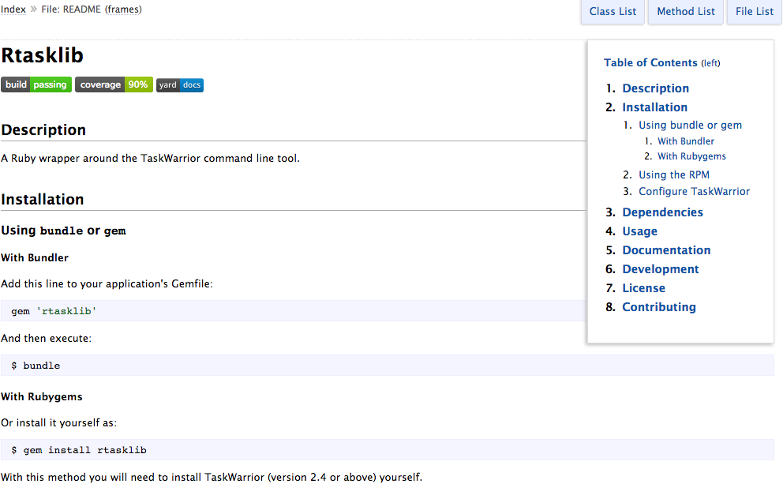

Rtasklib task data library
A Ruby wrapper around the TaskWarrior command-line tool
Rtasklib is a Ruby library for interacting with the task management tool, TaskWarrior, as if it was any other data store. It follows Ruby conventions, has 90% unit test code coverage, and has automatically generated documentation for the entire code base. It is the only Ruby wrapper available on TaskWarrior's website.